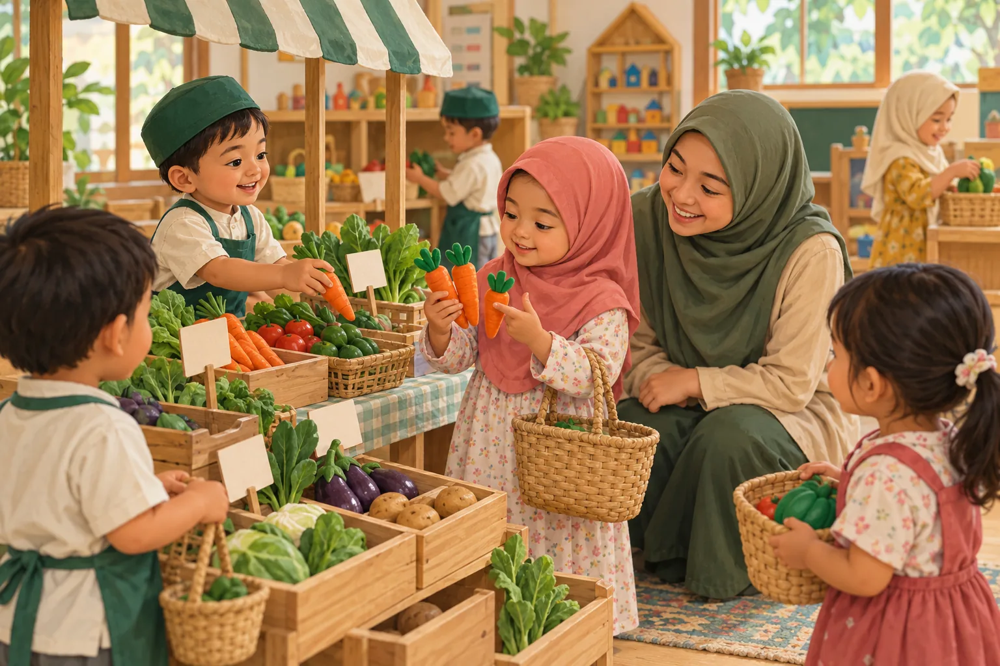
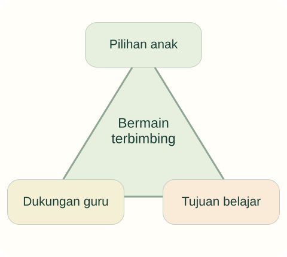

Tujuan pembelajaran
- Membedakan bermain bebas, bermain terbimbing, dan instruksi langsung.
- Merancang lingkungan yang memberi pilihan dan tujuan belajar.
- Menyusun bukti pengamatan tanpa mengganggu permainan secara berlebihan.
Kapan guru perlu ikut bermain, dan kapan perlu menunggu?

Anak bermain toko-tokoan. Guru mengubah permainan menjadi latihan menyebut angka secara bergiliran. Sebagian anak meninggalkan area. Guru lain menambah label harga dan bertanya bagaimana pembeli tahu jumlah yang harus dibayar.
- Keputusan apa yang masih dimiliki anak?
- Bagaimana guru dapat memasukkan tujuan tanpa mengambil alih permainan?
Temukan persoalan konseptual
Sebelum membaca penjelasan, pisahkan kejadian yang dinyatakan dalam kasus dari dugaan Anda. Gunakan pertanyaan berikut untuk menyiapkan analisis.
- Apa tujuan pendidikan yang sedang dipertaruhkan?
- Pengalaman apa yang dialami anak, dan informasi apa yang belum tersedia?
- Konsep atau jenis sumber apa yang diperlukan untuk menilai tindakan pendidik?
Bermain terbimbing

Bermain terbimbing mempertahankan keaktifan anak bersama tujuan dan dukungan pendidik. Diagram adalah sintesis untuk membaca kasus; manfaat bergantung pada tujuan, cara pelaksanaan, dan konteks penelitian.
Ketiga unsur dipertimbangkan bersama; bermain terbimbing bukan dominasi guru atau tanpa arah sama sekali.
Bermain sebagai pengalaman
Bermain memberi ruang untuk tindakan, imajinasi, aturan yang dinegosiasikan, dan hubungan dengan teman. Dalam pendidikan, guru dapat melihat peluang belajar tanpa harus mengubah semua permainan menjadi tes. Laporan Yogman et al. (2018) memberi bacaan pengayaan tentang bermain dan perkembangan; sumber tersebut merupakan laporan klinis berbasis literatur, bukan satu eksperimen kelas.
Untuk analisis, perhatikan siapa yang menentukan arah, seberapa besar pilihan anak, dan bagaimana tujuan belajar masuk. Kegiatan yang memakai mainan tetapi seluruh langkahnya dikendalikan guru belum tentu memberi kualitas pengalaman bermain yang sama.
Tiga bentuk pengorganisasian
Bermain bebas memberi kendali besar kepada anak dalam memilih dan mengembangkan aktivitas. Bermain terbimbing mempertahankan keaktifan anak dengan tujuan dan dukungan pendidik. Instruksi langsung memberi penjelasan atau demonstrasi yang lebih eksplisit. Bentuk-bentuk ini dapat digunakan pada kebutuhan berbeda; jangan memaksakan satu bentuk untuk semua situasi.
Skene et al. (2022) menemukan manfaat bermain terbimbing dibanding pembanding tertentu pada beberapa hasil belajar. Temuan itu tidak membuktikan keunggulan universal. Usulan dalam kelas harus menyebut kemampuan yang dituju dan alasan bentuk pendampingan dipilih.
Merancang ruang dan bahan
Lingkungan belajar perlu memungkinkan anak mengakses, memilih, mencoba, dan merapikan dengan aman. Bahan terbuka seperti balok, kain, atau wadah dapat digunakan dalam beragam cerita. Pemilihan bahan tetap mempertimbangkan ukuran, kebersihan, kondisi, dan kebutuhan kelompok. Bahan sederhana tidak otomatis aman hanya karena berasal dari rumah.
Pada toko-tokoan, pendidik dapat menambah kertas, alat tulis, gambar barang, dan wadah. Anak diberi kesempatan membuat aturan permainan. Guru mengamati apakah alat dapat dijangkau dan apakah satu anak menguasai peran tertentu terus-menerus. Pengaturan lingkungan dapat menjadi bentuk bantuan sebelum guru memberi banyak instruksi.
Mengamati dan menanggapi
Pengamatan dapat difokuskan pada percakapan, strategi, atau interaksi yang relevan dengan tujuan. Catat contoh khusus dan konteksnya. Jangan menghentikan setiap momen untuk meminta anak menjelaskan. Guru dapat memilih waktu yang tidak merusak alur permainan dan meninjau beberapa kejadian sebelum menyimpulkan.
Bantuan dapat berupa pertanyaan, penambahan bahan, atau demonstrasi singkat ketika diperlukan. Setelah memberi bantuan, lihat apakah anak mengambil alih tindakan. Usulan ini terkait gagasan scaffolding, tetapi tetap memerlukan penyesuaian. Penilaian membantu menentukan tindak lanjut, bukan mengubah bermain menjadi rangkaian pemeriksaan (Wood et al., 1976; Permendikbudristek 21/2022).
Kembali ke kasus
Latihan angka mungkin menggeser kendali dan tujuan permainan. Menambah label berpotensi menghubungkan tujuan numerasi dengan alur toko, tetapi guru tetap perlu membaca minat serta respons anak. Tidak semua permainan perlu diarahkan ke numerasi.
Analisis ini merupakan contoh penalaran pedagogis. Pada situasi nyata, keputusan memerlukan informasi tentang anak dan konteks lembaga.
Satu kasus, dua cara merespons
Gunakan teori pada materi di atas untuk memeriksa alasan dan akibat yang mungkin muncul. Alternatif ini merupakan contoh telaah, bukan resep untuk semua anak.
Permainan diambil alih
Menghentikan peran jual beli untuk meminta semua anak mengulang angka serempak.
Hubungan angka dengan kebutuhan bermain terputus.
Tujuan masuk melalui dukungan
Menambahkan label harga sederhana dan bertanya berapa sayur yang dibutuhkan pembeli.
Amati bagaimana anak menggunakan jumlah dalam permainannya.
Dari melihat ke beralasan
Tuliskan satu pertanyaan terbuka yang membantu berhitung tanpa memutus peran jual beli.
Buka contoh penalaran setelah mencoba
Contoh: “Pembeli ingin tiga wortel. Bagaimana kamu memastikan jumlahnya sudah pas?” Pertanyaan mengikuti alur anak; pendidik tidak harus mengubah setiap momen bermain menjadi tes.
Dasar konsep dan sitasi: baca materi inti serta referensi unit ini. Adegan dan alternatif merupakan penerapan ilustratif penyusun.
Latihan terbimbing
Tentukan satu tujuan toko-tokoan: komunikasi permintaan atau perbandingan jumlah. Buat satu pertanyaan yang membuka pikiran, bukan menuntut jawaban hafalan. Tulis pula kapan guru sebaiknya menunggu.
Latihan mandiri
Rancang area bermain untuk kelompok kecil. Cantumkan tujuan, pilihan anak, bahan, satu risiko keselamatan, bantuan guru, dan dua contoh bukti belajar. Jelaskan batas klaim dari bukti tersebut.
- Konsep digunakan dengan tepat dan dijelaskan hubungannya dengan kasus.
- Fakta dipisahkan dari interpretasi; sumber mendukung jenis klaimnya.
- Tindakan konkret, menghargai anak, dan memiliki cara peninjauan.
Lihat pembahasan
Tujuan pendidik hadir bersama keaktifan dan pilihan anak.
Bermain terbimbing menggabungkan arah pendidikan dengan keaktifan anak; kadar bantuan ditentukan oleh situasi.
Refleksi calon pendidik
Apakah pertanyaan saya memperluas permainan atau justru mengubahnya menjadi ujian?
Catatan hanya disimpan di peramban ini. Tidak dikirim kepada dosen.
Intisari dan tindak lanjut
- Bermain bebas, bermain terbimbing, dan instruksi langsung memiliki bentuk kendali yang berbeda.
- Keunggulan suatu pendekatan harus dibatasi pada hasil dan kondisi yang didukung bukti.
- Pengamatan dan bantuan hendaknya memperluas pengalaman tanpa selalu mengambil alih permainan.
Uji kembali pemahaman di atas melalui latihan mandiri. Jika alasan Anda belum menghubungkan konsep dan tindakan, baca ulang submateri terkait sebelum menandai selesai.
Referensi dan bacaan pendamping
Sumber untuk klaim khusus disebut pada uraian. Buku pendamping tidak dikutip langsung. Jenis dan batas penggunaan setiap rujukan dijelaskan di bawah.
- Skene, K., O’Farrelly, C. M., Byrne, E. M., Kirby, N., Stevens, E. C., & Ramchandani, P. G. (2022). Can guidance during play enhance children’s learning and development in educational contexts? A systematic review and meta-analysis. Child Development, 93(4), 1162–1180.Keunggulan bermain terbimbing ditemukan pada hasil tertentu; tidak untuk klaim unggul di semua domain.
- Wood, D., Bruner, J. S., & Ross, G. (1976). The role of tutoring in problem solving. Journal of Child Psychology and Psychiatry, 17(2), 89–100.Sumber primer konsep scaffolding; konteks tugas penelitian terbatas, bukan bukti semua bentuk bantuan selalu efektif.
- Yogman, M., Garner, A., Hutchinson, J., Hirsh-Pasek, K., Golinkoff, R. M., Committee on Psychosocial Aspects of Child and Family Health, & Council on Communications and Media. (2018). The power of play: A pediatric role in enhancing development in young children. Pediatrics, 142(3), Article e20182058.Laporan klinis berbasis literatur, bukan satu eksperimen. Digunakan sebagai bacaan pengayaan bermain dan relasi pengasuhan.
- Kementerian Pendidikan, Kebudayaan, Riset, dan Teknologi. (2022). Peraturan Menteri Pendidikan, Kebudayaan, Riset, dan Teknologi Nomor 21 Tahun 2022 tentang Standar Penilaian Pendidikan pada Pendidikan Anak Usia Dini, Jenjang Pendidikan Dasar, dan Jenjang Pendidikan Menengah.Rujukan penilaian yang ditemukan dalam penelusuran. Ketentuan penilaian dalam Permendikbud 137/2014 telah dicabut melalui peraturan ini.